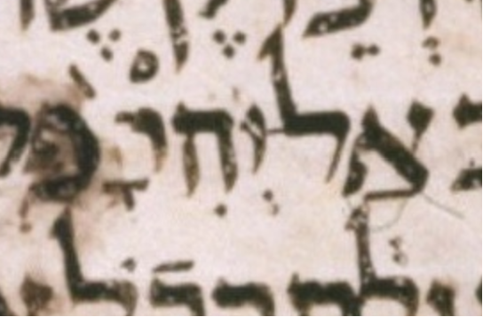

| n | 22 |
| citation:book | Jer |
| citation:c | 50 |
| citation:v | 29 |
| citation:position | 13 |
| author:name | Ben Denckla |
| author:mail | bdenckla@alum.mit.edu |
| author:confirmed | true |
| description | Note that while creating the pointed qere, the transcriber added a mapiq to he |
| lc:folio | Folio_274A |
| lc:column | 2 |
| lc:line | 24 |
| lc:credit | Credit: Sefaria.org. |
| reftext | לָהּ֙ |
| refuni | lamed qamats he dagesh pashta |
| changetext | לָהּ֙ |
| changeuni | lamed qamats he dagesh pashta |
| notes:note | The qere at issue is part of the compound אַל־יְהִי־לָהּ֙. The other parts of this compound are not part of this qere. |
| notes:note-2 | The manuscript’s pointed ketiv (MPK) is אָׄאׄ֙. (We use אׄ (א with an extraordinary upper dot) to stand in for a blank space.) |
| notes:note-3 | The MPK has no letter to carry a mapiq for the qere’s ה. The MPK (points on no letters) is qamats and pashta. |
| transnotes:transnote:action | Add |
| transnotes:transnote:type | a |
| transnotes:transnote:beforetext | XXX fill me in beforetext |
| status | Pending |
| type | NoTextChange |